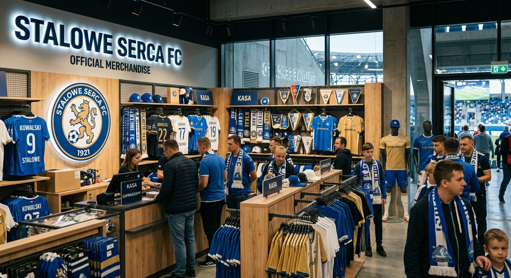
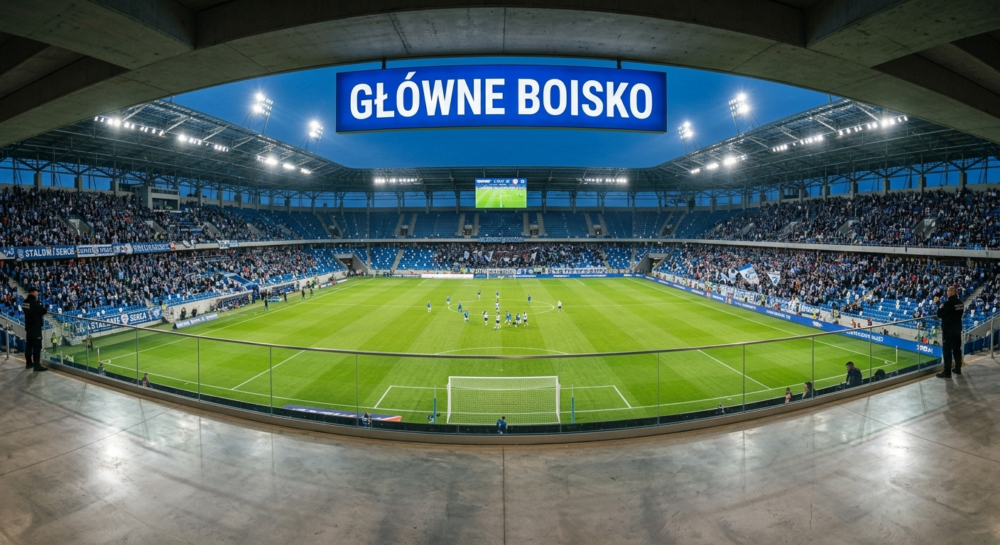

Punkt gastronomiczny
Możliwość zakupy jedzonka i pićka
Fan Shop (sklep kibica)

Fan Shop
Sklep kibica znajdujący się na terenie stadionu, oferujący oficjalne gadżety klubowe, odzież sportową, szaliki, koszulki, pamiątki i akcesoria związane z drużyną.
Jest miejscem promocji klubu i budowania więzi z kibicami.
Boisko główne

Boisko główne
Centralny obiekt stadionu przeznaczony do rozgrywania meczów i treningów.
Wyposażony w profesjonalną nawierzchnię z trawy naturalnej lub hybrydowej, bramki, oznaczenia boiska, system oświetlenia oraz instalację nawadniania i drenażu.
Jest główną przestrzenią aktywności sportowej stadionu.